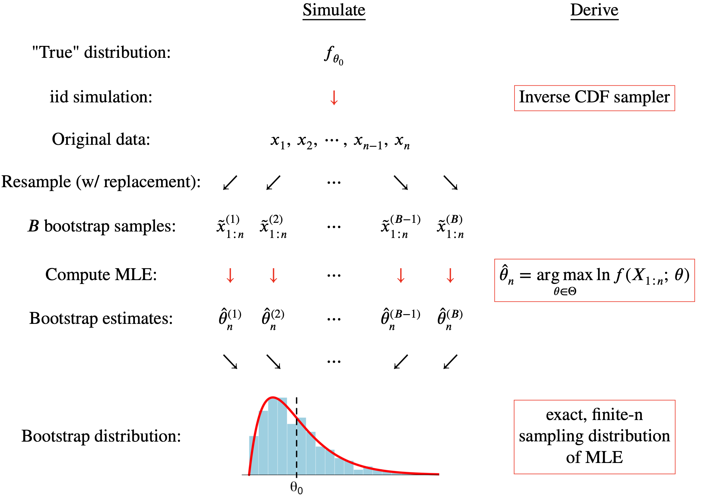
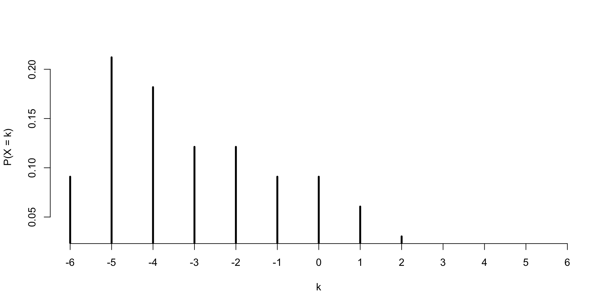
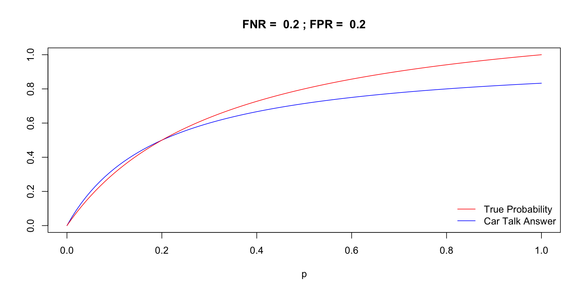

[1] 4[1] 3[1] 3[1] 0.75[1] 1.414214[1] 16
Duke University
STA 240 Fall 2026
R in 101, 199, etcR is a programming language, just like Python, C++, Julia, etc.R and teach you a narrow dialect called the “tidyverse,” which is very well-suited to data science, especially for beginners;We will use R as a labor-saving technology to perform three kinds of tasks:
choose, factorial, dbinom, etc);
If \(X\sim\text{Poisson}(\lambda=4)\), then
\[ P(X\text{ even}) = e^{-4}\sum\limits_{i=0}^\infty\frac{4^{2i}}{(2i)!}=e^{-4}\cosh 4. \]
a five-card hand is randomly dealt to you from a well-shuffled deck. What is the probability that the hand contains at least one ace?
\[ P\left(\begin{matrix}\text{at least}\\\text{one ace}\end{matrix}\right)=1 - P(\text{no ace})=1-\frac{\#(\text{no ace})}{\#(\text{five card hands})}=1-\frac{\binom{48}{5}}{\binom{52}{5}}. \]
Many ways to construct a vector:
It helps to give things a name so you can work with them later:
<- is called the assignment operator. You should now see x listed in the “cast of characters” (Environment) in the upper right.
You can pick whatever name you want, but:
_ (underscore);prob mass
prob_mass
R is case sensitive;
Prob_Mass is different from prob_mass.If you want to isolate a portion of a vector, you can use bracket notation to request a subset of the elements:
[1] 6.000000 3.141593 1.414214 2.718282 0.000000[1] 3.141593[1] 6.000000 1.414214 0.000000[1] 6.000000 3.141593 1.414214Each of these subsets is itself a new vector.
Many commands in R are vectorized. This means that if you provide the command with a vector containing many inputs, it will return a vector containing many outputs. It will go element-by-element through the input, apply the command to each one separately, and then return all of the outputs to you bundled in a vector.

I had a range:
But they need to be normalized:
Division (/) is vectorized, so it knows to divide each mass by 33.
The expected value is
\[ E(X)=\sum\limits_{k=-6}^2 k \cdot P(X=k). \]
Multiplication (*) is vectorized, so multiply each value by its probability:
\(X\) is the inner product of two random binary strings:
\[ X=\sum\limits_{i=1}^{10}a_ib_i. \]
Its pmf is
\[ P(X=k)=\frac{\binom{10}{k}3^{10-k}}{2^{20}},\quad k = 0,\,1,\,2,\,...,\,10. \]
\[ P(X=k)=\frac{\binom{10}{k}3^{10-k}}{2^{20}},\quad k = 0,\,1,\,2,\,...,\,10. \]
To compute all 11 of those probabilities in one fell swoop, take advantage of vectorization:
deck_of_cards <- c("AH", "2H", "3H", "4H", "5H", "6H", "7H", "8H", "9H", "10H", "JH", "QH", "KH",
"AD", "2D", "3D", "4D", "5D", "6D", "7D", "8D", "9D", "10D", "JD", "QD", "KD",
"AC", "2C", "3C", "4C", "5C", "6C", "7C", "8C", "9C", "10C", "JC", "QC", "KC",
"AS", "2S", "3S", "4S", "5S", "6S", "7S", "8S", "9S", "10S", "JS", "QS", "KS")
sample(deck_of_cards, size = 5, replace = FALSE)[1] "3D" "8D" "AH" "JD" "8C"From ?sample:
x: a vector of one or more elements from which to choose;size: the number of items to choose;replace: should sampling be with replacement?prob: a vector of probability weights for obtaining the elements of the vector being sampled.x and prob should probably be the same length!
range_x <- -6:2
masses <- c(3, 7, 6, 4, 4, 3, 3, 2, 1)
pmf <- masses / sum(masses)
random_draws <- sample(range_x, 5000, replace = TRUE, prob = pmf)
random_draws [1] -6 -4 -5 -6 -5 1 -6 -1 -2 -4 0 -6 -4 -2 -3 -2 0 -1 -4 -4 0 -3 -6 0
[25] 1 -6 -6 -4 -5 -5 -5 -2 -5 -5 -2 -5 -4 -5 -5 -5 -1 1 -4 -6 -5 -6 -4 -5
[49] -2 -5 -5 -6 1 -2 -3 -5 -2 -2 -5 -4 -4 -5 -5 -3 -5 -6 0 -5 -3 -5 -1 -4
[73] -5 -2 -2 1 -5 1 -2 -4 -5 -5 -3 -5 -4 -3 -5 -3 1 -4 -5 -2 2 -2 -3 -5
[97] -5 -1 -4 -3 -2 -3 -2 -3 -3 -4 -6 -4 -5 -6 -1 -1 0 -5 -3 -1 0 -5 -2 -6
[121] -1 -4 0 -2 -4 -5 0 -5 -5 -6 -4 -4 0 -5 -3 -1 -6 -5 -5 -2 -5 0 0 -1
[145] 1 -1 -5 -3 -4 -4 -2 -6 -1 -1 0 -4 -4 0 -4 0 -2 -1 -1 1 -6 -2 1 -2
[169] -4 -5 -5 -6 -4 -5 -3 -1 -5 0 -4 -6 -4 -5 -6 -3 -2 -5 -4 -6 -2 -5 1 -2
[193] -3 -3 -6 -4 -2 -3 -5 -4 -2 -5 0 -6 -4 -4 -3 -3 -2 -6 -4 -5 -4 -5 -3 -5
[217] -2 -4 1 0 2 -3 -4 -2 -4 -5 -6 -2 -2 -2 -1 -5 0 0 -6 -1 -2 -5 -5 0
[241] -4 -3 -2 1 -6 -2 -3 -5 -1 2 1 -2 -4 -4 -4 -6 -5 -6 1 -4 -3 0 -6 -5
[265] -2 -4 -3 -1 -4 -2 -5 -6 -4 -4 -5 -2 -2 -3 1 -6 -5 -4 -6 1 -1 0 -5 0
[289] -2 -4 0 -2 -6 -2 1 -5 -2 -4 -2 -5 2 -5 0 -1 -5 -5 -2 -4 -3 -5 1 1
[313] -2 -6 -3 -4 -5 -6 -3 -4 -5 -2 -4 -4 -4 2 -4 -1 -1 -4 -4 -3 -5 -6 -4 -2
[337] 0 -1 -3 -6 0 -5 -4 -4 -3 -4 -4 0 -5 -5 -4 -4 -2 -6 -5 -2 -5 -4 -4 -2
[361] -4 -1 -3 -3 0 -3 -5 -4 -5 -5 2 -3 -3 0 -4 0 -4 2 -5 0 -5 -5 0 -1
[385] -3 -2 -2 -6 -4 -5 -5 -1 -6 -3 -6 -2 -3 0 -3 -3 -3 -1 2 -4 -1 -1 -3 1
[409] -6 1 -3 -3 -1 -5 -4 -3 -1 -2 -1 -3 -2 -4 0 -5 -3 -4 -2 -6 2 1 -4 -4
[433] -2 0 1 -4 -3 -3 -3 -4 -4 -4 -1 0 0 -4 -5 -4 2 -2 -2 -3 -3 -2 -5 -4
[457] -1 -3 -3 0 -4 -5 -4 -4 -5 -3 -4 -2 -3 -2 -5 -4 -1 -2 -5 -1 1 -5 -4 -1
[481] -1 0 0 -4 -3 -5 -6 -1 -5 -4 -5 -6 -2 -6 -6 -6 -1 -5 -6 2 -5 -4 -3 -3
[505] -3 -4 -4 -1 -4 -3 -5 -2 -5 -5 -2 -2 -6 -1 -6 1 -3 2 -6 -3 -5 -5 0 -1
[529] -2 -4 -5 1 -2 -2 -4 -6 -1 0 -6 -4 -2 -2 0 0 -2 1 -3 -4 -1 -4 -3 -5
[553] -1 -6 -4 -1 -4 -5 -6 -5 -4 -2 -1 -5 -6 2 -1 2 -1 -6 -4 0 -5 -6 -4 -4
[577] -5 -5 -2 -3 -5 -5 -5 -4 -5 -6 0 -4 -3 -5 -4 -4 -5 1 -5 0 -5 -5 -1 -2
[601] 1 0 -6 1 -3 -5 1 -6 -4 -1 1 -3 1 -2 -3 -5 -2 -6 -3 -5 0 1 -3 -4
[625] -3 1 -6 -6 0 -5 -5 0 -3 -5 -5 0 1 -3 -6 -5 -3 -2 -3 -2 -6 -6 0 -2
[649] -3 -1 -1 0 -5 -1 0 -2 -3 0 -3 -1 -5 -5 -2 -4 -5 -2 -5 -5 -2 -2 -3 -3
[673] -6 -4 -5 -4 -4 -5 -5 0 -4 1 -2 -6 -5 -5 -2 -2 -2 -5 -5 -6 -2 -5 -5 2
[697] -1 -5 -5 0 -1 1 -2 -4 -5 -1 -2 -6 -1 -2 -2 -3 -6 1 -6 1 -4 2 -4 -1
[721] -1 -6 1 -6 -2 -5 -2 -5 -1 -1 -3 -6 -3 -4 -6 1 -5 -1 -3 -6 0 -3 -5 -1
[745] -4 -5 -5 -4 -5 -4 -3 -4 -5 -5 -4 -3 -2 0 -1 -5 -5 -4 -4 0 -5 -3 -5 -2
[769] 0 -2 -6 -1 -5 0 -5 -3 -6 -4 -5 -5 -6 -2 -4 0 -3 -1 -5 -5 -2 -6 -6 -5
[793] -5 -5 -1 -6 -4 -4 -2 -5 0 -4 -3 -1 -2 -1 -2 -2 -6 -4 -6 -4 -4 -2 -6 -1
[817] -3 1 -2 -1 -1 -2 -2 -1 -6 -1 -4 -5 -3 -5 -3 -5 -1 -3 -5 -4 -3 -2 0 -4
[841] -5 -3 0 -4 -2 1 1 -4 -5 -5 -5 0 1 -5 0 -4 -5 -5 -5 -1 -5 1 0 -3
[865] -3 -4 -5 -5 -3 -6 -2 -2 -5 -2 0 -4 -5 -5 -5 -1 -1 0 -5 -5 -4 0 -4 -4
[889] -6 -4 -4 -1 -2 -5 2 -5 -1 1 -3 0 -5 -4 -4 -5 -4 -5 -6 0 -5 -2 1 -5
[913] -1 -2 -2 -2 -2 -4 -1 2 -3 -4 -4 -5 0 -1 0 -5 -4 -4 -4 -4 0 -4 -4 -4
[937] -4 -4 -2 -5 -4 -6 -5 -2 -2 -4 -2 2 -5 -2 0 -4 2 1 -5 0 0 -6 0 -1
[961] -5 -3 0 -1 -5 -3 1 -4 -5 -4 -6 -6 -1 -3 -1 1 -2 -4 -1 2 -5 -2 -4 -3
[985] -2 -4 -5 -1 -4 1 -3 -2 -5 1 -2 -2 -4 0 -5 0 -4 -4 -4 -1 -1 0 -5 -5
[1009] -2 -1 -6 -5 -3 1 0 -6 1 1 -5 -5 -2 -4 1 -4 0 -5 -4 -2 -5 1 -2 -2
[1033] -4 -5 -5 -5 -3 -2 -1 -1 2 -5 0 -3 -2 2 -4 -5 -6 1 -2 -3 2 -2 -1 -6
[1057] -3 -2 -4 -1 -5 1 -5 -3 -6 -4 -2 -2 -4 -1 1 -5 0 0 -4 0 -6 1 1 -2
[1081] -5 -3 -2 -2 -5 1 -5 -2 -5 -2 -5 -5 -1 -4 1 -3 -4 -1 -4 0 -4 -2 -3 -5
[1105] -1 2 -3 1 -3 0 1 -5 -6 0 -4 -2 -4 1 -4 -5 -6 -6 -5 -4 -1 -3 -6 -6
[1129] -1 -6 -5 0 -5 -2 -2 -4 -4 -1 -5 -3 -6 -4 -4 -4 0 -5 -4 -4 -5 -2 -5 -4
[1153] 1 -5 -6 -5 -5 -5 -2 -5 -4 -2 -5 -5 -5 2 1 0 -1 -2 -3 -2 -2 -6 0 -5
[1177] 0 2 -4 -5 -1 -2 -5 -3 -4 -3 -1 -1 -1 -1 -3 0 -4 -3 -6 -6 0 -5 0 -3
[1201] -2 -3 -4 -6 -4 -2 -5 -4 -2 -4 -6 -6 1 1 -1 -4 -4 -1 0 -1 -5 -2 -1 -4
[1225] -2 -5 -3 -1 0 -4 1 -4 -1 1 -2 -5 -2 -6 -1 -1 -1 -3 -6 0 -4 -4 1 -1
[1249] -4 -4 -3 0 -1 -2 -6 -5 -2 -2 -2 -3 -5 1 -6 -6 -2 1 -2 -2 -5 -3 -2 -3
[1273] -6 -6 -5 -5 -5 -6 1 -4 -5 -6 -4 -5 -5 -4 -5 0 -5 -6 1 -6 -4 -6 -4 0
[1297] -6 -4 -1 -4 0 -3 1 -4 -6 -4 1 -2 -2 -5 -3 -4 -4 -4 -2 -3 -4 0 -6 -5
[1321] 0 -5 2 -4 -2 -5 1 -4 0 -3 -3 -2 -4 0 -5 -5 -5 -4 -1 0 -3 -1 -1 -6
[1345] -4 -6 -6 -2 -2 -4 -5 -5 -4 -5 -4 -4 -3 -4 -6 -2 -1 -2 -4 0 -4 -1 -1 -5
[1369] -3 -2 -5 2 -2 -5 -3 -5 -5 -4 -3 -3 -6 -4 -2 -1 -4 -3 -6 -3 -2 -1 -5 -2
[1393] -6 -4 -5 -2 2 2 -1 -5 -4 -5 1 -3 0 -5 -5 -5 -3 -2 -1 -5 -6 -2 -3 -4
[1417] -2 -3 -6 -1 -2 -1 -4 -4 -4 -5 -6 -5 -1 -5 -4 -5 -1 -4 -2 -6 -4 -2 -1 -1
[1441] -4 -2 -1 1 -5 -1 -2 -2 -2 -1 -1 -2 -1 0 -6 1 -5 -5 -4 0 -2 -5 1 -6
[1465] -2 -1 -5 -1 -4 -5 -4 -5 -5 -4 0 -2 -5 -5 -6 -6 -1 0 -3 -6 -2 2 1 -6
[1489] -6 -1 -4 -5 -4 -5 1 -5 -3 -1 -5 2 -5 -5 -4 0 -5 -5 -4 -6 0 -6 0 -3
[1513] -5 -4 1 -2 1 -4 -5 -2 -5 -2 -5 -4 -3 0 -6 -5 -1 -4 -4 -4 -4 -2 -5 -2
[1537] -2 0 -3 0 -6 -2 -3 -2 0 -5 -4 -5 0 -3 -4 0 -1 -5 -5 -2 -4 0 -2 -4
[1561] -3 -5 -5 0 -2 -2 -4 -1 -4 -6 -4 -2 -2 -5 -1 -2 -5 -3 -1 -5 0 -5 -5 -4
[1585] -6 -1 -3 -5 -5 -5 -3 -4 -2 -6 1 -2 -4 -6 -1 2 1 -1 -4 -5 -3 -4 -5 0
[1609] -2 -1 1 -5 -6 0 -5 -2 0 -2 -5 -4 -4 -4 -5 -5 -1 -2 -2 -3 -6 -5 2 -5
[1633] -5 -5 1 -4 -3 -2 -4 -4 -5 -2 -4 -6 -5 -6 -2 -2 0 -3 -5 -4 -3 -2 -6 -1
[1657] 1 -5 1 -5 -5 -5 -5 -6 -4 -4 -3 -1 -5 -2 -3 -2 -2 -5 -5 -3 -5 1 -3 -3
[1681] -4 1 0 -5 2 -1 -6 -3 -5 -4 -5 -6 1 -3 1 -1 -4 -4 -2 -6 -1 -5 0 -1
[1705] 1 2 -3 -4 -1 -1 0 -4 -3 -5 -3 -4 -6 -2 -3 -2 -1 -3 -2 -4 -6 -4 -3 2
[1729] -6 -4 -2 -5 -5 -2 -1 2 -3 -2 -5 -3 -5 -6 -3 -3 0 -5 -2 -3 -4 -2 -1 -4
[1753] -1 -4 -5 -3 -2 1 -3 -5 -4 -1 -3 -4 -2 2 -5 -3 -6 -3 -2 -5 -1 -3 -5 -6
[1777] -5 -4 -5 -2 -3 -4 -1 -3 -5 -5 -4 -1 -3 -1 -3 2 -1 -2 -5 -4 -5 -4 -1 -3
[1801] -3 -2 2 -5 -6 -4 -2 -5 0 -3 -4 -4 -1 2 -2 -6 -6 -4 -3 -5 -4 1 -5 2
[1825] -5 0 2 0 -5 -5 -3 -4 -3 -6 1 -5 -4 0 0 -1 -1 -1 -1 -6 -6 -3 -6 -1
[1849] -5 -5 0 -4 -5 -3 -6 -6 -5 -5 -3 -5 -3 -5 -2 -2 -4 -4 1 -3 -4 -2 -4 -3
[1873] -2 0 -5 -3 -2 -1 -1 0 -4 -1 0 -1 -3 -3 -5 -4 -3 -2 -4 -3 0 -4 -4 -3
[1897] -2 1 -3 -6 -4 -6 -4 0 -3 -4 0 -6 1 -6 -6 -1 -4 -4 0 -2 -5 -6 -3 2
[1921] -5 1 -5 -2 -2 -5 -2 -4 0 1 2 -5 -6 -3 -3 -3 0 -2 0 0 -1 -5 -3 -5
[1945] -3 -5 -2 -5 -3 -5 -2 -6 -1 -4 -6 -4 -4 -4 -5 -2 -5 -5 -6 -3 -5 -2 -3 -6
[1969] 0 0 0 -3 1 -6 1 -3 -5 -4 -3 -2 1 -4 -2 0 -5 -5 -4 -6 -3 -4 -3 -6
[1993] -4 -4 -3 -4 -1 -5 2 0 -5 -4 0 -2 0 -2 -3 -3 2 -2 -5 -3 -3 -1 -5 2
[2017] -5 -5 1 -1 -3 -3 -4 -6 -1 0 -1 -3 1 -4 -3 -2 -2 1 2 -5 -6 -5 1 2
[2041] -3 -5 -1 0 -2 -5 -5 -2 -5 -6 -5 -5 -5 -1 -3 0 0 -3 0 -5 -6 2 -5 -4
[2065] -5 -6 -2 -5 -1 -6 -2 -4 1 -6 -6 -3 -3 -4 0 -5 2 -1 -2 -4 -4 -1 -5 -5
[2089] -4 -3 -5 -6 -5 -4 -1 -5 -6 -4 -4 -1 -4 -6 -3 -6 -5 -5 -1 -4 -2 -5 -4 -3
[2113] -2 -4 -5 1 -3 -5 -5 -4 -1 -4 -3 1 1 0 -4 -5 -5 0 -5 -3 -2 -1 -6 -3
[2137] -2 -2 -2 0 -4 -6 -2 -4 -5 -5 -5 -1 -5 -3 -2 -2 -4 -3 -4 -5 -4 -2 -2 -2
[2161] -5 -4 -3 -3 -5 -6 -3 -6 1 -3 -6 -5 -5 -2 0 1 -4 -1 -5 1 -5 -4 1 -5
[2185] -2 -4 -5 -4 -4 0 -3 0 -4 1 1 -4 -6 -5 -6 2 2 1 -4 -3 -5 2 1 -6
[2209] -1 1 -3 -3 -5 -5 1 -4 -3 -5 -4 -6 -1 -5 -1 -2 -5 -5 -2 -5 -2 -2 -4 0
[2233] -6 -3 -4 -4 -5 -2 -2 -1 -4 -4 -4 -1 -3 -5 -3 -5 -4 1 0 -6 -4 -5 -5 -6
[2257] -6 -1 -5 -1 -1 0 -2 -4 -5 0 -4 -6 -3 -4 -4 -6 1 -4 -4 1 -5 -2 -4 2
[2281] -2 -1 -1 0 -4 -1 -5 -5 -1 -3 -5 1 -3 0 -4 -2 -5 -1 -2 -2 -1 -3 -2 -3
[2305] -4 0 0 -3 -2 -4 0 -1 -1 0 -1 0 -4 -5 -2 -6 -3 -2 -5 -2 -5 -2 -5 -4
[2329] -3 -4 -4 -1 -3 -3 0 0 0 -1 -2 -5 -2 0 -6 -6 -4 1 -2 0 -5 2 -6 -5
[2353] -4 -6 -1 -6 -2 -4 1 -5 -2 -4 2 -5 1 -2 1 -4 -3 -5 -3 -1 -2 -3 -6 1
[2377] -3 -5 -4 -5 -4 -5 -3 -4 -2 -6 -3 -5 -1 -4 -2 -2 -2 0 -1 0 -5 -5 -4 -6
[2401] -5 -3 -1 0 -1 -4 -3 -2 -3 -5 1 -1 -3 -6 -2 1 -5 -1 -5 0 -5 -4 1 -5
[2425] -5 -2 -5 1 0 -2 -3 -5 -6 -5 0 -5 -5 -5 1 -3 -3 -5 -3 -4 0 -4 -5 0
[2449] -5 -5 -5 0 -5 -5 -4 -2 -4 -1 -2 -5 -3 -4 -6 -4 -5 -3 -5 -4 -1 -4 -5 -6
[2473] -6 -2 -4 0 -5 -5 0 -3 -3 -5 -4 -3 -5 -1 -1 -1 -4 1 0 -2 -5 -1 0 -5
[2497] -1 -6 0 0 0 0 -5 0 -5 -2 -6 -6 -2 -4 -5 -3 -1 -4 -4 -5 -5 -6 2 -4
[2521] -6 -4 -5 -4 -6 -4 2 -5 -5 -5 -1 -4 -3 -2 -4 -4 -4 -6 -5 0 -5 -4 -4 -5
[2545] -1 -2 -5 -5 -1 -4 -5 -4 -6 -2 1 0 1 -5 -1 -5 -1 -4 -5 -4 -5 -4 -4 -6
[2569] -5 -1 -3 -5 -4 -3 1 -3 -5 -4 -6 -2 -5 2 2 -1 -2 -5 -5 -4 -1 -5 -2 2
[2593] -6 -5 -5 -5 -6 0 1 2 -5 -5 -6 -5 -5 0 -4 -4 -5 -2 -5 0 0 -5 2 -3
[2617] -3 2 2 -2 -4 -6 1 -6 -5 -4 -3 2 -2 -1 -1 -3 1 -5 -3 -4 -6 -5 -5 -4
[2641] -5 -3 -2 -5 -3 1 0 1 0 -3 -2 -4 -2 -1 0 -2 0 1 -5 -5 -1 -6 -5 -5
[2665] -5 -6 -5 1 -4 -4 -1 -4 -4 -5 -3 -2 -6 -6 -3 -1 -6 -1 -5 1 1 -6 -4 0
[2689] -3 -4 -4 -2 -3 -2 -2 0 -5 -5 -1 -6 -5 0 -4 -1 -5 -5 -5 -6 1 -5 -5 0
[2713] -5 0 2 -4 -2 -4 0 -5 -3 -1 -5 -2 -5 -2 -3 -2 0 1 -5 -5 -6 -3 -6 -4
[2737] -5 -3 2 -4 -5 -4 -5 -4 -2 -1 -2 0 -4 -6 -5 -5 -1 -6 -1 -3 -5 0 -5 -4
[2761] -4 -4 -4 -2 -2 2 -2 -1 -5 -4 -1 -5 -6 -4 -1 0 -5 -5 -5 2 1 -1 -2 -2
[2785] -3 -1 -3 -2 -1 -2 -4 0 1 -5 -4 -5 -3 -3 -3 -4 -4 -4 -4 1 -3 -2 -2 -4
[2809] -4 2 -2 -6 -3 -5 -1 -6 -2 -3 1 -5 1 -4 -1 -5 -1 -4 -5 -3 -5 -3 -5 -3
[2833] -6 -4 -4 -1 1 -6 -4 -5 -4 -5 -1 -5 -4 -5 -1 2 -6 -2 2 -3 -5 -4 2 -5
[2857] -5 -4 -3 1 1 -4 -1 -5 -2 -6 -3 -5 -4 -5 -5 0 -3 -1 -3 -3 -5 -4 -3 -1
[2881] -2 -5 -4 -4 -6 -6 -1 -2 -6 -5 0 -4 -4 -4 -4 -2 -5 -3 -6 2 -3 -4 -6 -3
[2905] 0 -2 -2 -5 -5 -4 -5 -4 -4 -5 -3 -5 -3 0 2 -1 -6 -5 -4 -4 -5 -3 -2 -2
[2929] -6 -6 -1 -6 -1 -6 -5 0 -5 -4 -5 -6 -5 -4 -5 -2 0 -5 -3 -4 -2 -4 -6 -5
[2953] -4 -3 -4 -6 -4 -4 -1 -2 0 -2 -1 -4 0 -5 -5 -4 -2 -2 -2 -4 -6 -4 -5 -5
[2977] 0 -5 -6 0 -4 -2 -5 -1 -4 1 -3 -6 -3 -1 0 -4 -5 -4 1 -4 -5 -6 2 0
[3001] -1 -4 1 -5 0 -2 -3 -4 -5 -6 1 1 -2 1 -5 -3 -5 -3 -4 -1 -5 -6 -5 -1
[3025] -3 -3 -5 -4 -5 -2 -5 -5 -3 -1 -1 -2 -5 1 2 -4 -3 -1 -5 -4 -5 -6 -5 -6
[3049] -4 -4 -4 -5 -4 -5 -6 0 -5 -6 -4 -1 -2 -5 -4 0 -2 -2 -2 2 0 0 -4 1
[3073] -3 -2 0 -4 -6 -5 1 -6 -4 0 -2 2 -4 -4 -5 1 -6 -5 -2 2 0 -5 -4 -5
[3097] 0 1 2 -1 -4 -5 -5 -5 2 -5 -4 -5 0 1 0 -3 -5 -6 -5 1 -1 -5 2 -4
[3121] 0 -5 -1 -1 -2 -5 -3 -6 -5 -6 -6 0 2 -5 -4 -5 -2 -3 -5 -6 -4 0 1 -3
[3145] -4 -2 -5 -5 -4 1 1 -3 -4 0 -6 -3 -1 -5 -4 -2 -1 -1 -1 -3 1 -5 -6 -3
[3169] -6 -3 -6 1 -5 2 -2 -5 -3 -1 -2 -2 -5 -2 -5 -2 -4 -2 -2 -6 0 0 -4 -4
[3193] -3 -4 -3 -3 0 -3 -4 -4 -3 -3 -5 -5 -6 -4 0 -2 -5 0 -4 2 -5 1 -5 -3
[3217] -4 -6 -5 -5 -4 1 -6 -5 -4 0 -5 -3 -6 -6 -2 -5 -2 -5 -4 -5 1 -5 1 -5
[3241] -1 -5 -5 -5 -5 2 -4 0 1 -2 0 0 1 -3 -3 -1 -1 -2 0 -4 -6 -4 -1 -6
[3265] -5 -5 -4 -2 -3 -3 -4 -4 -4 1 -5 -5 -2 -6 -3 -6 -5 -3 -2 -6 -5 0 -4 -2
[3289] -1 -4 -2 -1 1 0 -1 1 -4 -5 0 0 -3 -2 -5 -4 1 -3 -5 -4 1 -2 -1 0
[3313] -5 -5 -5 -5 -5 -5 -4 -5 -6 1 2 -4 -5 -5 -3 -1 -5 -4 1 -5 -5 -4 -1 -5
[3337] -5 -3 0 2 -4 -5 -4 -4 -3 -3 -5 -3 0 -4 2 -5 0 -6 -6 0 -5 -3 -5 0
[3361] -5 -5 0 -1 0 -3 -5 -3 -1 -4 -3 1 -2 -5 -4 -5 -6 -5 -6 -5 -4 -3 -1 2
[3385] -1 -6 -3 -4 0 -2 -4 -1 -1 -4 -3 -4 -2 -5 0 -2 0 -6 -3 -3 -6 -2 -5 1
[3409] -1 -5 -5 -2 1 -3 -5 -4 1 -4 2 -4 -1 -1 -4 -4 -1 -2 -5 -2 -4 -4 -3 -5
[3433] -5 -4 -6 -5 -2 -2 -6 0 -3 -4 -1 -6 -1 0 -4 -2 -4 -5 -5 2 -6 -6 -2 -3
[3457] -4 -4 -2 -4 -6 -5 -4 -5 -4 -4 -5 -5 -4 -5 -1 -5 -3 -5 2 1 -4 -3 -1 -4
[3481] 0 -3 -6 -4 -4 -5 -4 -2 0 0 -6 -5 0 -4 -5 -6 -5 -5 -4 -1 -4 -2 1 -5
[3505] 1 -4 -4 -5 -1 2 -5 -6 -1 -5 2 -4 -4 0 -2 -1 -1 -5 -5 -5 -1 0 -5 -5
[3529] -5 0 -4 -4 -1 1 -5 -4 0 -5 -6 -2 -6 0 -1 -6 -5 -4 -5 -6 -3 -3 -4 -3
[3553] -3 -2 -2 -5 -3 -2 1 -5 -1 -5 -5 -2 -1 -1 -5 -2 1 0 0 -4 -5 1 -2 -2
[3577] -3 -3 -4 -5 -5 -4 -5 -5 -4 -5 -4 -5 2 -4 1 -2 0 -6 2 -5 0 -5 -6 -3
[3601] -1 -1 -1 -6 -3 1 -4 -4 -3 -3 -2 -5 -5 -5 -3 -5 1 -2 -3 -3 -3 -1 -3 -4
[3625] -2 1 0 0 -4 1 -1 -1 -3 1 -1 -5 -1 -4 -3 -6 -5 -5 -2 -4 -2 -6 -5 -3
[3649] -4 -6 -4 -2 -2 -5 -4 -4 -6 -1 -4 -3 0 -5 1 -5 -6 -5 -5 -4 2 -5 -2 -4
[3673] 1 -2 -5 -4 -6 -5 -4 -2 0 0 -3 -3 -4 -1 -2 -5 -6 -4 -3 -1 0 -4 -2 -5
[3697] 0 2 -1 -2 -4 2 -3 -4 -6 -2 2 -4 -5 -6 -2 -6 -3 0 -5 -4 -1 -4 -4 -6
[3721] -3 -3 -5 -1 -1 -6 -1 -1 -3 -5 -1 -5 -6 -6 -4 -4 -4 -5 0 -6 -6 -6 -5 -4
[3745] 0 -1 -4 0 -4 -3 -4 -5 -5 -1 -3 -5 0 -5 0 -3 1 -5 0 -5 -3 -3 0 -5
[3769] -5 -5 2 -1 -3 -2 1 -1 -4 -4 -5 -5 -6 1 -5 1 -5 -1 -4 -5 -5 2 -3 -2
[3793] -3 -3 -3 2 -2 -6 -6 -4 -3 -3 -6 0 -4 0 -6 -1 -2 0 -2 -3 -2 -4 -4 -3
[3817] -5 -3 -3 -5 -5 -5 -6 0 -5 -5 -5 0 -4 -3 -3 -4 -3 -3 -1 -5 -5 -5 1 -3
[3841] -6 -5 2 -5 0 -5 -5 -3 -4 -2 -5 -3 -3 0 -5 -2 -1 -3 -4 -2 -4 2 2 -6
[3865] 0 -6 -2 0 2 -5 -4 2 -6 0 0 -6 -4 -3 -3 -1 -4 -2 -4 1 -5 0 -1 -4
[3889] 1 -2 -2 -2 -5 -3 -4 -5 -3 -6 -5 -4 -5 -5 -5 0 -1 1 -5 0 -3 0 -2 -1
[3913] -5 0 -4 -4 -1 0 -3 0 -5 -2 -5 0 -1 -4 -2 -3 0 -2 -4 -3 -1 -3 -1 -4
[3937] -2 -4 -5 -5 -5 -6 -1 -1 -1 -2 -5 -4 -2 -6 -2 -5 -5 -5 -3 1 -3 -2 -5 -4
[3961] 0 -6 -1 1 -5 -2 -6 0 -5 0 -4 1 -3 1 -2 -4 -5 -5 -4 -2 -4 1 -5 2
[3985] -5 -2 0 -5 -3 0 -5 -6 -4 0 -4 -1 0 2 -1 -5 -5 -1 -4 -4 -2 -5 -4 -2
[4009] 2 -5 2 -4 -4 1 -5 1 1 -1 -2 -3 -5 -3 -3 -5 -1 -1 -2 1 -5 -5 -1 -1
[4033] -4 -5 -6 -5 -1 -5 -6 -1 -6 0 -1 -2 -5 -5 -4 -6 -4 -2 -2 -1 -5 -6 0 -5
[4057] -6 1 -3 0 -1 -4 -4 2 -4 0 -3 -5 -6 -4 -3 -6 1 -5 -2 -6 -5 2 -2 -3
[4081] 1 -4 -2 -2 -5 1 -2 -5 1 0 -5 -3 0 -3 1 -4 -3 -3 -3 -4 -5 -3 -1 -6
[4105] -4 -5 1 -5 -5 -5 0 -5 -5 -1 1 -4 -6 -2 -5 -4 -4 -1 1 -6 -1 -4 1 -3
[4129] -1 -6 -5 -6 2 0 -1 -4 1 -2 -3 -2 -2 -4 -4 -2 -3 -2 -3 -5 -3 -2 0 -6
[4153] -2 -2 -1 -5 -6 -2 -1 0 0 -3 -2 0 0 -5 -1 -4 -5 -4 -3 1 -2 -6 -5 -3
[4177] 2 -2 0 -3 -5 -3 -1 -3 1 -5 -4 -3 -6 2 -1 -5 -1 -2 -5 -5 -1 -5 -5 0
[4201] -3 0 0 -1 -3 -4 -5 -6 -4 -5 1 -5 -6 -3 -6 -5 -4 -6 -4 -3 -6 -5 -6 -4
[4225] -3 -4 -6 -1 -2 -4 0 -5 0 -2 -4 -1 -5 1 0 -4 0 0 -5 -5 -2 2 -5 -4
[4249] -4 0 -5 -6 2 -5 -3 0 -3 -2 -2 -5 -3 -5 0 -3 -5 -1 -4 -5 -5 -3 -1 -4
[4273] -4 -5 -3 -4 -5 -4 -2 -5 -3 -5 -5 -5 -4 -5 -5 -3 -4 1 -3 0 1 -5 -4 -6
[4297] -4 -5 -2 1 -4 -2 -5 -5 -4 -2 -5 -1 -5 -2 1 -3 -2 -6 -5 -6 0 -2 -5 -6
[4321] -5 -2 -5 2 -6 -3 2 -5 -5 -4 -5 0 -2 -3 -4 -2 -4 -3 -5 -1 0 -5 -3 -3
[4345] -1 -6 -5 -4 -5 -1 -1 -5 -6 -4 -1 -2 -3 -3 0 -4 -5 -1 -4 -4 1 -6 -5 -2
[4369] -3 -2 -3 0 -3 -2 -5 -4 -5 -4 -2 -1 -5 -5 -3 -2 -4 -2 -6 -2 -1 -4 -5 1
[4393] 1 0 -3 -2 -2 1 -4 -4 0 0 -6 -1 -6 -5 0 -5 -5 -4 -3 -3 -5 -5 -5 -2
[4417] 1 0 -6 -5 -4 -5 -1 1 0 -2 -5 -4 -6 0 0 -5 -5 -5 -5 -5 -6 1 -6 -5
[4441] 2 -4 -5 0 -3 -4 0 -5 -2 -4 -6 -5 0 0 -6 -3 -3 -1 -3 -2 0 -3 -5 -1
[4465] -2 -3 -1 -6 -2 -1 -5 -4 -3 -4 -4 -2 -5 -5 -2 -5 -1 -4 -4 -5 -3 0 -2 -2
[4489] -1 -2 -5 -3 2 -5 -3 -4 -3 -4 -5 -4 -5 -3 -2 -1 -4 0 -4 -6 -3 -5 -5 -4
[4513] -2 -3 -6 -4 -4 2 2 -3 -3 0 -3 1 -6 -5 -5 -1 -1 -2 -6 -2 0 -4 -6 -4
[4537] 2 -5 -3 2 -4 -5 -3 -4 -3 -2 -3 -4 0 -3 -3 0 -3 -2 -3 -1 -4 0 -4 -4
[4561] -5 -5 -3 -5 -1 -5 -4 -3 -4 -4 -3 1 -6 -1 -4 -4 -4 -6 1 -3 -5 -5 -4 -4
[4585] -1 -1 -5 -4 -5 -4 -5 0 -6 -2 -4 -4 0 -3 -5 -4 -4 -1 0 0 -1 -3 -3 -4
[4609] -4 -4 -6 -5 -5 -6 -3 -5 -3 -4 -6 0 -3 2 -5 -5 -5 -6 -2 1 -3 -2 -5 -6
[4633] -3 1 -6 0 1 -5 0 -5 -2 -2 -1 1 -5 -6 -5 -4 -1 -2 -5 -2 -5 -5 -6 0
[4657] 1 -6 -5 -2 2 0 0 0 -4 -3 -2 -4 -4 -5 -5 -2 -4 -3 0 0 -4 -5 -6 0
[4681] -3 -3 -4 -4 0 -2 0 -1 -5 -2 -3 1 -3 -5 -5 -5 -4 -4 -5 2 0 -5 -1 -3
[4705] -5 -1 -6 0 -3 2 -5 -4 -4 -6 -5 -6 -3 -4 -2 2 -4 -2 0 -6 -2 -5 -4 -2
[4729] 0 -6 -4 -6 -3 -4 -6 -4 0 0 -4 -1 -5 -2 -6 -4 1 -2 -5 -5 -5 -4 -2 -3
[4753] 2 -5 -4 -5 -2 -4 -6 2 -4 -5 -4 -6 -6 -1 2 -1 1 -3 -6 -5 -4 -2 -4 0
[4777] -2 -3 -3 -6 -1 -1 -2 -5 -5 -4 -2 -1 -2 -1 -2 0 0 -4 1 -4 -5 -6 -1 -5
[4801] -1 -5 -2 -5 -4 -6 -2 -1 0 -1 -5 -3 -3 -5 0 -4 -5 -6 -2 -1 -6 -5 -5 -2
[4825] 1 -3 -1 -6 -1 -3 -3 1 -2 -1 0 1 -3 2 1 -6 -4 -2 -1 2 -3 -5 -2 -4
[4849] -6 -5 -1 1 1 1 -1 1 -4 1 0 -3 -5 1 0 -6 -4 -1 -6 -5 -4 -3 -1 0
[4873] -4 1 -3 -2 -5 -3 -4 -6 1 -5 -5 -2 -3 -5 -1 -1 -1 2 -4 -6 -4 -1 -1 2
[4897] -3 -5 -4 1 -2 -3 -5 -4 -5 -6 -6 -5 -1 -2 -2 -3 -6 -1 -2 -5 -2 1 -4 -1
[4921] -3 -4 -2 -5 -5 -4 1 -2 -5 -3 -6 -3 -5 -2 -1 -3 -5 -4 -6 -2 -4 -5 -6 -5
[4945] -3 -4 -5 -1 -5 -4 -5 0 -1 -5 -5 -6 -2 -5 -5 -4 -6 -4 -5 -6 -3 -4 -2 -1
[4969] -4 -2 -1 -4 -1 -3 -2 -4 -5 -3 -2 -5 0 2 -5 -4 1 -5 -4 -4 -4 -4 -1 -4
[4993] 0 -3 -5 -6 1 -2 -3 1How many times did we see each value?
What proportion of the time did we see each value?
How does the computer know how to generate draws from this distribution? What is it actually doing?
This is a fascinating, beautiful, and very important topic that we will spend several future labs on. Stay tuned!
Just a scatterplot: the first vector is the x-values; second vector is the y-values.
Make it more pmf-ish with type = "h":
Plot this function from 2 to 15:
\[ f(x) = \frac{1}{x(\ln x)^{-1}}. \]
To plot a smooth curve, give it the formula (in terms of x) and connect the dots:
For fixed \(f_- = f_+=0.2\), plot these functions:
\[ \begin{aligned} h(p)&=\frac{(1-f_-)p}{(1-f_-)p+f_+(1-p)},\\ g(p)&=\frac{p}{p+f_+}. \end{aligned} \]
f_plus = 0.2
f_minus = 0.2
curve(x / (x + f_plus),
col = "blue",
xlab = "p",
ylab = "",
xlim = c(0, 1),
ylim = c(0, 1),
main = paste("FNR = ", f_minus, "; FPR = ", f_plus))
curve(x / (x + f_plus * ((1 - x) / (1 - f_minus))),
col = "red", add = TRUE)
legend("bottomright",
c("True Probability", "Car Talk Answer"),
col = c("red", "blue"),
bty = "n",
lty = c(1, 1)
)
pdqr functionsWe’ve begun studying famous parametric families of probability distributions:
| Distribution | Range | PMF: \(P(X=k)\) |
|---|---|---|
| \(X\sim\text{Binom}(n,\,p)\) | \(\{0,\,1,\,2,\,...,\,n\}\) | \(\binom{n}{k}p^k(1-p)^{n-k}\) |
| \(X\sim\text{Geom}(p)\) | \(\{1,\,2,\,3,\,...\}\) | \((1-p)^{k-1}p\) |
| \(X\sim\text{Poisson}(\lambda)\) | \(\mathbb{N}=\{0,\,1,\,2,\,3,\,...\}\) | \(e^{-\lambda}\frac{\lambda^k}{k!}\) |
You will see dozens more by the end of the semester.
pdqr functionsR provides a standardized set of commands for working with each family of distributions:
p command computes the CDF (stay tuned!);d command computes the PMF;q command computes the quantile functions (stay tuned!);r command simulates random numbers from the distribution.For \(X\sim\text{Binom}(\texttt{size},\,\texttt{prob})\), use:
Recall from class that the probability of a random person liking my dating profile is \(p=0.0162\). If \(X\sim\text{Binom}(25,\,p)\) counts the number of matches I receive back today in 25 attempts, what is \(P(X>0)\)?
Finite additivity:
\[ \begin{aligned} P(X>0) &= P(X=1\text{ or }X=2\text{ or }...\text{ or }X = 25) \\ &= P(X=1)+P(X=2)+...+P(X = 25) \\ &= \sum\limits_{k=1}^{25}P(X=k) \\ &= \sum\limits_{k=1}^{25}\texttt{dbinom(k, 25, 0.0162)} . \end{aligned} \]
[1] 2.736646e-01 5.407644e-02 6.826890e-03 6.182922e-04 4.276133e-05
[6] 2.347136e-06 1.049064e-07 3.886804e-09 1.208947e-10 3.185191e-12
[11] 7.152242e-14 1.374033e-15 2.262588e-17 3.193499e-19 3.856350e-21
[16] 3.968850e-23 3.459923e-25 2.532166e-27 1.536189e-29 7.588819e-32
[21] 2.975316e-34 8.907967e-37 1.913287e-39 2.625471e-42 1.729320e-45[1] 0.3352315Recall from class that the probability of a random person liking my dating profile is \(p=0.0162\). If \(X\sim\text{Binom}(25,\,p)\) counts the number of matches I receive back today in 25 attempts, what is \(P(X>0)\)?
Complement rule:
\[ P(X>0) = 1 - P(X = 0) = 1 - \texttt{dbinom(0, 25, 0.0162)}. \]
Simulate \(X\sim\text{Binom}(25,\,0.0162)\) a bunch and verify that the empirical proportions are close to the true probabilities.
random_draws
0 1 2 3 4
0.6614 0.2766 0.0560 0.0050 0.0010 For \(X\sim\text{Pois}(\texttt{lambda})\), use:
If \(X\sim\text{Poisson}(\lambda = 100)\), then
Say that \(X\sim\text{Poisson}(\lambda = 100)\) represents the number of claims an insurance company receives in a month. What is the probability that they receive an above-average number of claims?
\[ \begin{aligned} P(X > E(X)) = P(X > \lambda) &=P(X>100) = \sum\limits_{k=101}^\infty P(X=k) && (\text{ick!}) \\ &= 1-P(X\leq 100) = 1 - \sum\limits_{k=0}^{100} P(X=k) && (\text{yay!}) \end{aligned} \]
If \(X\sim\text{Poisson}(\lambda=4)\), then \(P(X\text{ even})\approx 0.5001677\).
Verify:
Simulate \(X\sim\text{Poisson}(\lambda = 100)\) a bunch and verify that the empirical proportions are close to the true probabilities.
random_draws
68 69 71 72 73 74 75 76 77 78 79
0.0002 0.0004 0.0002 0.0006 0.0008 0.0010 0.0016 0.0014 0.0030 0.0020 0.0030
80 81 82 83 84 85 86 87 88 89 90
0.0044 0.0036 0.0078 0.0098 0.0112 0.0112 0.0166 0.0218 0.0202 0.0224 0.0260
91 92 93 94 95 96 97 98 99 100 101
0.0274 0.0318 0.0306 0.0342 0.0350 0.0358 0.0382 0.0440 0.0358 0.0386 0.0436
102 103 104 105 106 107 108 109 110 111 112
0.0396 0.0362 0.0390 0.0298 0.0340 0.0286 0.0288 0.0278 0.0220 0.0202 0.0208
113 114 115 116 117 118 119 120 121 122 123
0.0186 0.0174 0.0114 0.0106 0.0084 0.0074 0.0044 0.0056 0.0068 0.0032 0.0034
124 125 126 127 128 129 130 131 132 135 136
0.0024 0.0014 0.0016 0.0016 0.0012 0.0008 0.0010 0.0002 0.0004 0.0006 0.0002
141 142
0.0002 0.0002 Clearly we didn’t visit every possible natural number. Which ones did we see?
[1] 68 69 71 72 73 74 75 76 77 78 79 80 81 82 83 84 85 86 87
[20] 88 89 90 91 92 93 94 95 96 97 98 99 100 101 102 103 104 105 106
[39] 107 108 109 110 111 112 113 114 115 116 117 118 119 120 121 122 123 124 125
[58] 126 127 128 129 130 131 132 135 136 141 142What are their probabilities?
[1] 0.0002 0.0002 0.0004 0.0006 0.0008 0.0011 0.0015 0.0020 0.0026 0.0033
[11] 0.0042 0.0052 0.0064 0.0078 0.0094 0.0112 0.0132 0.0154 0.0176 0.0201
[21] 0.0225 0.0250 0.0275 0.0299 0.0322 0.0342 0.0360 0.0375 0.0387 0.0395
[31] 0.0399 0.0399 0.0395 0.0387 0.0376 0.0361 0.0344 0.0325 0.0303 0.0281
[41] 0.0258 0.0234 0.0211 0.0188 0.0167 0.0146 0.0127 0.0110 0.0094 0.0079
[51] 0.0067 0.0056 0.0046 0.0038 0.0031 0.0025 0.0020 0.0016 0.0012 0.0010
[61] 0.0007 0.0006 0.0004 0.0003 0.0001 0.0001 0.0000 0.0000Close?
probs props
68 0.0002 0.0002
69 0.0002 0.0004
71 0.0004 0.0002
72 0.0006 0.0006
73 0.0008 0.0008
74 0.0011 0.0010
75 0.0015 0.0016
76 0.0020 0.0014
77 0.0026 0.0030
78 0.0033 0.0020
79 0.0042 0.0030
80 0.0052 0.0044
81 0.0064 0.0036
82 0.0078 0.0078
83 0.0094 0.0098
84 0.0112 0.0112
85 0.0132 0.0112
86 0.0154 0.0166
87 0.0176 0.0218
88 0.0201 0.0202
89 0.0225 0.0224
90 0.0250 0.0260
91 0.0275 0.0274
92 0.0299 0.0318
93 0.0322 0.0306
94 0.0342 0.0342
95 0.0360 0.0350
96 0.0375 0.0358
97 0.0387 0.0382
98 0.0395 0.0440
99 0.0399 0.0358
100 0.0399 0.0386
101 0.0395 0.0436
102 0.0387 0.0396
103 0.0376 0.0362
104 0.0361 0.0390
105 0.0344 0.0298
106 0.0325 0.0340
107 0.0303 0.0286
108 0.0281 0.0288
109 0.0258 0.0278
110 0.0234 0.0220
111 0.0211 0.0202
112 0.0188 0.0208
113 0.0167 0.0186
114 0.0146 0.0174
115 0.0127 0.0114
116 0.0110 0.0106
117 0.0094 0.0084
118 0.0079 0.0074
119 0.0067 0.0044
120 0.0056 0.0056
121 0.0046 0.0068
122 0.0038 0.0032
123 0.0031 0.0034
124 0.0025 0.0024
125 0.0020 0.0014
126 0.0016 0.0016
127 0.0012 0.0016
128 0.0010 0.0012
129 0.0007 0.0008
130 0.0006 0.0010
131 0.0004 0.0002
132 0.0003 0.0004
135 0.0001 0.0006
136 0.0001 0.0002
141 0.0000 0.0002
142 0.0000 0.0002What you type in your Quarto doc:
$$
P(X = k) = \binom{n}{k} p^k (1-p)^{n - k}.
$$What appears in the rendered .pdf:
\[ P(X = k) = \binom{n}{k} p^k (1-p) ^{n - k}. \]
What you type in your Quarto doc:
$$
P(X = k) = e^{-\lambda} \frac{\lambda^k}{k!}.
$$What appears in the rendered .pdf:
\[ P(X = k) = e^{-\lambda} \frac{\lambda^k}{k!}. \]
What you type in your Quarto doc:
$$
\Gamma(x) = \int_0^\infty z^{x-1} e^{-z} dz.
$$What appears in the rendered .pdf:
\[ \Gamma(x) = \int_0^\infty z^{x-1} e^{-z} dz. \]
What you type in your Quarto doc:
$$
\sum\limits_{n=0}^\infty n\frac{6}{\pi^2n^2} = \infty.
$$What appears in the rendered .pdf:
\[ \sum\limits_{n=0}^\infty n\frac{6}{\pi^2n^2} = \infty. \]
$$ and ends with $$. Make sure you have line breaks immediately before the start of the math chunk and immediately after;What you type:
$$
h(x)
=
\exp
\left(
-\frac{1}{2}
\frac{(x-\mu)^2}{\sigma^2}
\right)
.
$$How it renders:
\[ h(x) = \exp \left( -\frac{1}{2} \frac{(x-\mu)^2}{\sigma^2} \right) . \]